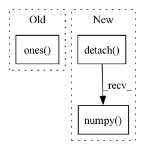

Pattern ID :36771

Before Change
def cal_anomaly_map(fs_list, ft_list, out_size=256):
pdist = torch.nn.PairwiseDistance(p=2, keepdim=True)
anomaly_map = torch.ones([ft_list[0].shape[0], 1, out_size, out_size]).to(device)
a_map_list = []
for i in range(len(ft_list)):
fs = fs_list[i]
After Change
ft_norm = torch.divide(ft, torch.norm(ft, p=2, dim=1, keepdim=True))
a_map = 0.5*pdist(fs_norm, ft_norm)**2
a_map = F.interpolate(a_map, size=out_size, mode="bilinear")
a_map = a_map[0,0,:,:].to("cpu").detach().numpy() // check
a_map_list.append(a_map)
anomaly_map *= a_map
return anomaly_map, a_map_list
In pattern: SUPERPATTERN
Frequency: 3
Non-data size: 3
Instances
Fragment ID: 104857486
Project Name: hcw-00/stpm_anomaly_detection
Commit Name: b65e7398e528f7adaea6c5eae33900da07180108
Time: 2021-04-14
Author: 21908600@ncbnet.co.kr
File Name: train.py
M Class Name: AnonimousClass
N Class Name: AnonimousClass
M Method Name: cal_anomaly_map(3)
N Method Name: cal_anomaly_map(3)
M Parent Class:
N Parent Class:
M File Name: train.py
N File Name: train.py
M Start Line: 73
M End Line: 73
N Start Line: 73
N End Line: 82
'>
Before Change
fig, axes = plt.subplots(1, 3, figsize=(base_size * 3, base_size * 1))
axes[0].imshow(self.pos_emb_h)
axes[1].imshow(self.pos_emb_w)
hh_sum = tf.ones([1, self.pos_emb_h.shape[0]]) @ self.pos_emb_h
ww_sum = tf.ones([1, self.pos_emb_w.shape[0]]) @ self.pos_emb_w
axes[2].imshow(tf.transpose(hh_sum) + ww_sum)
titles = ["pos_emb_h", "pos_emb_w", "sum"]
After Change
import matplotlib.pyplot as plt
pos_emb_h = self.pos_emb_h.detach().numpy() if hasattr(self.pos_emb_h, "detach") else self.pos_emb_h.numpy()
pos_emb_w = self.pos_emb_w.detach().numpy() if hasattr(self.pos_emb_w, "detach") else self.pos_emb_w.numpy()
fig, axes = plt.subplots(1, 3, figsize=(base_size * 3, base_size * 1))
axes[0].imshow(pos_emb_h)
'>
Fragment ID: 104857485
Project Name: leondgarse/keras_cv_attention_models
Commit Name: e05e233f369a1d58f912872b1581a80d15cacc3f
Time: 2023-02-07
Author: leondgarse@gmail.com
File Name: keras_cv_attention_models/botnet/botnet.py
M Class Name: RelativePositionalEmbedding
N Class Name: RelativePositionalEmbedding
M Method Name: show_pos_emb(2)
N Method Name: show_pos_emb(2)
M Parent Class: layers.Layer
N Parent Class: keras.layers.Layer
M File Name: keras_cv_attention_models/botnet/botnet.py
N File Name: keras_cv_attention_models/botnet/botnet.py
M Start Line: 132
M End Line: 135
N Start Line: 129
N End Line: 136
'>
Before Change
latent = self.shared_net(state)
// TODO: initialize pi_mean weights properly
mean_actions = self.actor_net(latent)
action_std = th.ones(mean_actions.size()) * self.log_std.exp()
action_distribution = Normal(mean_actions, action_std)
// Sample from the gaussian
if deterministic:
After Change
state = th.FloatTensor(state).to(self.device)
latent = self.shared_net(state)
action, _ = self._get_action_dist_from_latent(latent, deterministic=deterministic)
return action.detach().cpu().numpy()
def get_policy_stats(self, state, action):
state = th.FloatTensor(state).to(self.device)
latent = self.shared_net(state)
'>
Fragment ID: 104857484
Project Name: dlr-rm/stable-baselines3
Commit Name: 26f0c8d8e5e568c0e1305df663808e6247c326ee
Time: 2019-09-19
Author: antonin.raffin@ensta.org
File Name: torchy_baselines/ppo/policies.py
M Class Name: PPOPolicy
N Class Name: PPOPolicy
M Method Name: actor_forward(3)
N Method Name: actor_forward(3)
M Parent Class: BasePolicy
N Parent Class: BasePolicy
M File Name: torchy_baselines/ppo/policies.py
N File Name: torchy_baselines/ppo/policies.py
M Start Line: 59
M End Line: 69
N Start Line: 75
N End Line: 78